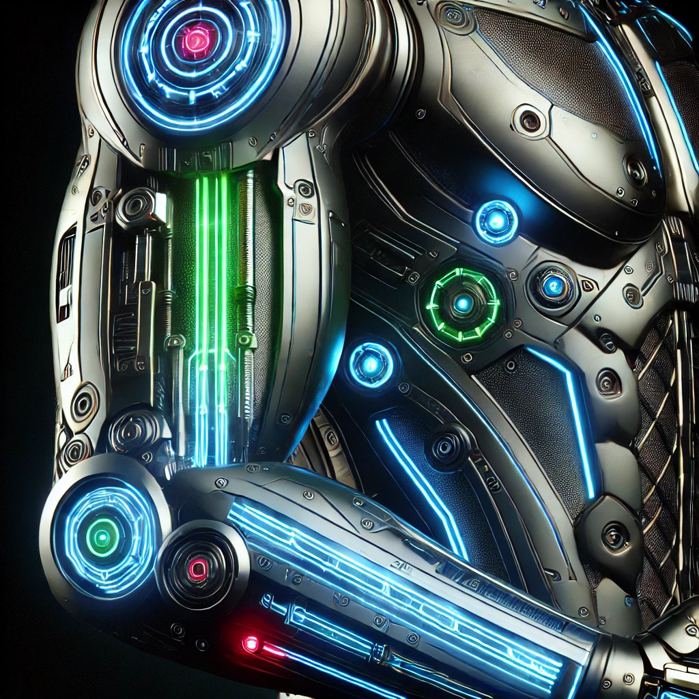

The Future of Cybernetic Enhancements
Posted on September 16, 2024 by Pano Georgiadis
As we dive deeper into the future, the line between man and machine continues to blur. Cybernetic enhancements are no longer just a concept found in science fiction; they are a growing reality...
What Are Cybernetic Enhancements?
Cybernetic enhancements refer to the use of technology to improve the human body's physical and mental capabilities. These enhancements range from bionic limbs to neural implants...
"The future is now, and the human body is becoming the next frontier for technological advancement."
For more on the technical details, check out our deep dive into the top enhancements available today...